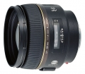

美能达的AF 851.4G(D)以其优异的整体性能和人像摄影特有的表现受到广大专业摄影师以及高层摄影爱好者的称赞。这只镜头的来源可以追溯到阿尔法镜头系列最早版本AF851.4。以那只镜头为蓝本经过几次的外观改进和操作性的改善演变为今天的AF 851.4G(D)。
一只独具特色的好头！色彩还原准确，层次丰富，全开光圈时仍有很高的分辨率，是这一规格镜头中的佼佼者。
优秀的光学设计和制作保证了其成像优异的品质，视觉上给人“味精”刚好的感觉。 此外，手动对焦时阻尼适度，手感很好。
不是内对焦，对焦速度不是很快且手动对焦时调焦行程有点大了
非常满意。紫色的镀膜，诱人的“大眼睛”。
对焦迅速，虽然不是SSM。 成像一流（f2.8以上）。 较轻便。
有点贵，没有1.8光圈的可以选择。
非常满意
大口径，高解像力，易操作。
价格高